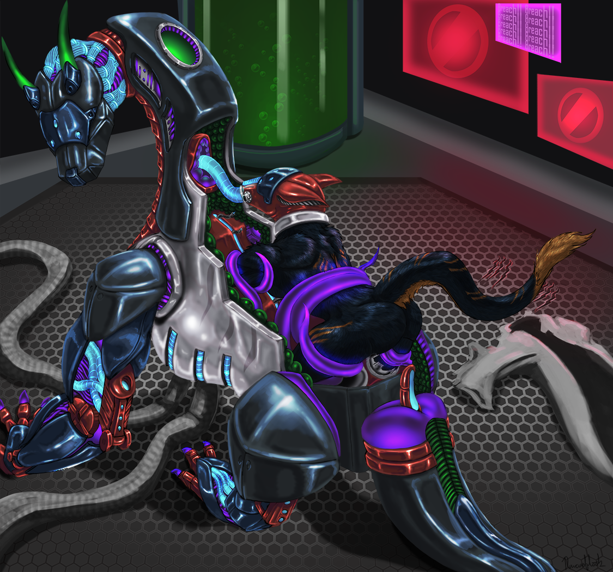

The Mecha Project
Written by TwistedSnakes
Illustrated by Ravensflock

“Gah!” Kronas threw his pencil at the wall, letting it clatter onto the metal floor of the lab. He has been in the development lab for a month now, not leaving except to use the washroom to answer nature’s call, or to get his meals. Even then, his meals consisted entirely of bottled mixtures of protein and starches, which meant he could dedicate all his time on his project.
Vortec Corp, where Kronas worked at, was the hi-tech research branch of the government, creating new technologies meant to give them the upper hand in times of war. The government predicted three years ago that the Azion nation would soon turn against them, and with the increased military training in Azion in the past year, it was only a matter of time before war befell them.
Six months ago, Kronas was working as the leader of his team of four years on a cloaking device, meant to bend light around its user to give the illusion of invisibility, when the CEO of Vortec Corp came into his lab. “To what does my team owe the pleasure of this visit, Mr Pens?” Kronas asked, bowing his head to the anthro tiger standing before him. “You have a new task assignment,” the tiger said, handing a plain brown dossier to Kronas. “This project is of utmost importance, and of top secrecy. We will need your expertise for this, so you will be assigned this project by the end of this week.” Flipping through the sheets of project specifications, Kronas felt excited at this opportunity to challenge his and his team’s engineering skills. “Got it, Mr Pens. I’ll tell my team to put this project on hold, and we will prepare for this one.”
“Your team will not be joining you Mr Kronas. This project is for you alone,” Pens said bluntly. “What?” Kronas stared at the tiger, mind blank, simply looking the tiger in the face. Pens was wearing a stoic expression, emphasized by his dark sunglasses and business suit. Kronas shook his head. “And if I refuse this project?” Kronas questioned, the words out of his mouth before he could stop himself. He was defying his superiors! He never meant to do that. But this was the team he grew close to over the years of project developments, bonding over nights spent locked in the labs trying to meet tight deadlines, or drinking to celebrate a project well done. This team meant everything to him, at least here in Vortec Corp.
“You don’t have a say in this Mr Kronas. You will be working on this project in Lab 294-G from next week onwards.” Without waiting for a word from Kronas, the tiger left the room, tailed by two rhinos bodyguards. Kronas team later found him slumped in a chair, clutching the empty brown folder, project specifications flung across the room, scattered across the floor like leaves in the autumn.
Since then, Kronas put in his all into the project. He was assigned to one of the best labs in the entire complex, with automated arms so advanced, they could build anything from the biggest military tank to the smallest spy watches with moving parts. It came with the best facilities too, from an attached washroom complete with a shower, to a drinks and snack dispenser. With this technology in his hands, the project would be done in three weeks and he could go back to working with hims team, or so he thought. Every turn he took, he would face problems, program bugs, or physical limitations that would stump him in the project development.
The project he was working on was going to be a game changer. In fact, it would be the next evolution of war. In the past, as technology developed, feral forms gave way to anthro forms. After all, they no longer needed great strength and agility to hunt for their next meal, and anthro forms would give them two front paws that could do work. However, in times of war, anthro forms were practically useless. Standing positions made them sitting ducks for long-range snipers, and the lack of strength and mobility worked against them. This project would fix that. The future was in mechas: a robotic body that could be controlled by the person inside. Feral mechas meant that they could reverse what evolution did to them: give them back the power that nobody had for millions of years.
The project however, did not stop there. Envisioned by the greatest minds that the government could hire, this project would do more than give power to the user. Instead, it was to give them ultimate control on the battlefield. It would come with displays showing important information, such as the battlefield status, inform the user of weaknesses in the enemy lines, allow them to communicate with team members, and more. It was also to be a life-sustaining suit, allowing its user to live within it indefinitely. And Kronas would develop it all.
Three weeks turned into a month, a month turned into two, and now he has spent half a year working alone on his project. Despite having poured his heart, mind and soul into the project at the start, each obstacle weakened his resolve. He gave up hope of ever working with his team again, since his team was assigned a new leader in his absence. But the project still had to be done. He had to do his part for his country. Time was running short, and Kronas knew it. At the end of each week the head scientist of Vortec Corp would come to check on his progress, and ask him on his expected completion date, each time hoping that the end was in sight.
Three months ago Kronas started working longer weeks. Unlike the five-day work week everyone else had, he would go home on Saturday night, coming back on Sunday morning. A month ago, he stopped leaving the lab entirely. “You got to take care of yourself, Kronas,” the head scientist would advice him each time. Each time, Kronas would nod his head, muttering words under his breath.
Today was a particularly bad day for Kronas. A bug in the code prevented the voice activation from working properly, and it took him hours to find the source of the problem. After that, hacking attempts from the enemy succeeded, disrupting their servers, and causing the software installation process to fail halfway. Following that, to conserve power supply, the lights were dimmed in all the labs, and the fans pumping fresh air slowed down, making the air heavy.
In the end, Kronas gave up working on the dragon mecha standing in the center of the office. It took the form of a feral dragon, built with black and silver metal. He had been working on the joints, so the metal plates on them were removed, exposing red, blue and purple parts. These parts were specially designed to mimic the feral body, having been built with material that was semi-metal, semi-organic. The red material functioned as the mechanical version of muscles, being able to turn electricity into the pure force of muscles contracting and flexing. The blue material functioned as channels for fluids, not unlike the veins and ducts in the anthro body. Unlike regular rubber tubing, these organic counterparts could monitor circulation throughout the entire mecha body, and could release heat, oxygen and other chemicals to various regions. The purple material was something Kronas developed himself. The best material in the world to describe this material would be the tentacles of an octopus. It was strong, although not as strong as the red muscular material, but it was way more versatile, being able to twist and turn. This was the missing link required to be able to increase the mobility of mechas, increasing their range of movement beyond the robotic back and forth angles dictated by their joints.
With nothing he could do on the mecha, he took to developing the control system instead. Diagrams and notes were scribbled across sheets of papers. It was easy to create a design where the user could simply move his body, and the mecha would follow. However, there were complications. One was the problem of allowing an authority to override the mecha in case of emergencies. Sure, if the person was injured, his officer could bring him home. However, what if the person was still trying to move? Should the mecha respond to the user or the officer? If it was the user, then muscle spasms caused by the injury would disrupt proper maneuvers back to base. If it was the officer, then a user would be at the mercy of whatever his officer wanted him to do.
Another problem was the life support mechanisms. When the mecha needs to save power for sustained periods of time, it could lower life support mechanisms, and put its user into a form of facultative hibernation. However, if the suit was putting its user to sleep, then how would the user wake up the machine up? There were too many problems he needed to fix. “Gah!” he let out a frustrated gasp. Why was this project so annoying? If he had his team here, they could have done it much faster. Why couldn’t he have them here? Why was everything working against him? Why was he so stupid? He slammed a fist on the table just as the lab door opened and the head scientist walked in again.
“You got to take care of yourself, Kronas.” The same advice playing on and on like a broken record. “What do you want? The project isn’t done yet.” Kronas hissed behind his teeth. “It’s not about the project. It’s about you. You need to go home, and get some rest.”
“I’m not. I’m going to stay here until the project is finished. Then we’re going to win this war, and I’m going to get back to working with my team,” Kronas retorted.
“You can’t work like this.”
“Yes I can. Watch me.”
“No. You are going home tonight, and that’s an order.” The scientist left without waiting for Kronas’ reply.
“ARGH!” Kronas yelled, hurling his sheets off the table, pacing angrily around the office. He caught sight of himself in the metallic surface of the wall. His fur was unkempt, messy from weeks of not brushing. He lost so much weight too, with his joints more and more visible under his fur. And he stank from days of not showering.
He looked at his face. He had eye bags sagging down, and his eyes were burning with fiery anger and frustration. What in the world has he come to? He used to be so calm and collected. In the past, his team could be hours before the deadline, and he’d still patiently answer their questions and guide the team to finishing it. He would think logically before making decisions. And he had never been frustrated at work before. He collapsed onto his chair.
Tears streamed from his eyes. He didn’t want to look at himself anymore. He wanted his old projects back. He wanted his team back. He wanted his life back. Instead, he was reduced to the poor mess that was now huddled on the leather chair, the only one in the entire lab.
An hour later, feeling a bit better, Kronas got up. He had to get his life together. Organizing the notes he threw to the floor, he stacked them in a nice pile on the table. He would wash up, and he would go home and get some sleep. He walked over to the shower cubicle, hooking his lab coat onto a rack. The rack slid back into the wall, and steam emerged from the gaps as his lab coat was cleaned. He stepped into the shower and turned on a warm spray onto his back. His shoulders and back relaxed for the first time in weeks. Had he really been that tense all this while? No matter, he would get his work back on track.
After the shower, he brushed his fur of the tangles that had set in. As a sergal, he was blessed with nice soft fur. It was black on his back, with cream-coloured fur on his underbelly going all the way up to his lower jaw. The orange streaks going across his body added some highlights too, and he made sure to comb everything nicely. It felt good to see his fur shine like that again.
The washed lab coat was hanging from the rack, and he put it on. Just then, the power came back on, and suddenly the dim room was flooded with lights. “Well at least the power is back to normal now,” Kronas thought, squinting till he got used to the brightness. “Time to go home.” He picked up his bag, now covered with a layer of dust, and began packing his belongings into it.
Unknown to Kronas, the power activation also activated the mecha standing in the room. “Entering autonomous mode,” the internal screen displayed. Kronas continued packing his bag.
“Got to get my toothbrush… and did I leave anything behind?”
“User not found. Searching for user,” the machine whispered.
“Whoa, it’s three in the morning. I guess it’s fine if I go to work later tomorrow. Well technically later today.”
“User found. Engaging user retrieval protocol.” Purple tentacles emerged from the open back of the dragon mecha, making its way to the unsuspecting sergal, his back turned to the dragon.
“That should be it, time to get some sleep.” Kronas yawned. “Main door, open. Security code 294-what the?” he yelped in surprise as a purple tentacle grabbed his ankle, yanking him into the air. His bag and lab coat fell to the ground as he flailed in surprise.
“What are you doing? Mecha, stop. Stop. STOP!” He tried the stopping command to no avail, he was still dangling in the air. Suddenly, the tentacle slammed him to the ground. “Oof!” he gasped as the air was knocked out of him. But his ankle was still trapped. He got to get out of here. Catching his breath as he tried to get up, he fought the tentacle. Digging his claws into the hexagonal grill of the lab floors, he pulled himself towards the emergency lever. He was close, one arm’s length away. The mecha seemed to notice his resistance. The purple tentacle tightened its grip, pulling harder. He felt a shot of pain up his leg and pelvic joint. He winced, but this was no time to show weakness. He was a fighter, and he was going to make it. He would pull the lever, and security would come to help him. Pushing the pain out of his mind, he reached out, and grabbed the lever, pulling it.
Sirens started blaring in the lab, and the monitor screens were replaced with a display “BREACH DETECTED. CALLING SECURITY.” He was going to be saved, but he needed to hang on. He dug his claws and held for dear life. Another tentacle grabbed his other ankle. “No! Come on come on come on,” he begged for the security guard to come soon.
Meanwhile, up in the security post, the security guard on duty was sleeping. The breach was reported in the form of a high-pitched beeping sound that woke the sleeping guard up. “What the-” the dog started he lost his balance and the chair he was sleeping in fell backwards. “Dammit. What now.” He looked at the panels, seeing a red light blinking beside the “Lab 294-G” label. “Oh come on that’s the highest security lab. *Nobody* would have gotten in.” He flicked a switch, and the emergency blinker stopped. “Stupid false alarms.” He paused. Perhaps he should check on the lab. There were no cameras in the labs, all to preserve the secrecy of the the projects, so he would have to go to the bottom of the underground bunker. Cursing his luck like there was no tomorrow, he grabbed his baton and torch and trudged sleepily out to the corridor.
Another tentacle was wrapped around Kronas’ waist and pulling. The emergency alarm had been turned off, and there was no way he could reach the lever again without risking his hold on the position. Just then, the tentacles jerked his body, stressing his shoulder joints. Help better come soon. Another jerk. His arms would be ripped off his sockets soon. He saw the tentacles bracing for one giant tug. He braced himself and closed his eyes. “GRAWWNNN” the metal grill on the floor groaned as it gave way to Kronas’ sharp claws, and Kronas was hurtling towards the mecha.
He was lifted above the mecha, its back revealing an opening to lower him in. “Nononono,” he flailed. Tentacles grabbed his free tail and arms, lowering him into the chamber. He could see the soft green padding inside. The padding was unique, comprising of individual “bubbles” of fluids. It allowed shock protection from within the armour, as well as temperature regulation for the user inside. But now these padding would be his prison.
Another tentacle reached out and grabbed his muzzle, keeping his mouth shut. His arms and legs were lowered into the limb sockets, putting him in a feral position just like the mecha. This was his last chance to escape. Wait, he put in an emergency override in the first week of development. This was the time to use it. What was the code, come on, come on, come on. Emergency shutdown, passcode 924A? Or was it 294A?
His arms and legs fully in, and the metal rings surrounding the socket tightened, its clamps locking down on his flesh. He yelped in pain, coming out as a squeak with his muzzle closed. Ok it was Emergency shutdown, passcode 294A. But he needed his mouth free. He thrashed his head about, getting his muzzle loose. Now was the time to deactivate the machine. He gasped for air, and shouted “EMERGENCY SHUTDOWN, PASSCODE TWO NINE-YIP!” as a rubbery hood shot from the mecha, surrounding his head and closing around his neck. No! That was his only chance.
The hood tightened around his head, positioning a rectangular display in front of his eyes. Tubes were forced up his nostrils and mouth. The tube in his mouth was pushed to the back of his throat, depressing his tongue and making him gag. It pulled his head into the mecha, guiding his neck down a socket before it clamped his head in place. “MMMMMMFFTTT!” he screamed.
The tentacles lowered back into the mecha, and its back closed up, encasing Kronas’ body. The mecha tail raised up, getting ready to fit into position. At its end was a probe, shaped like a tapered dildo meant to measure a user’s internal state. A hiss escaped, and the joints pushed the tail into place, with the probe filling Kronas’ ass. “MFFT MFFFT MFFFTTT!”
“User metrics indicate high levels of stress. Administering sedative to induce calm.” A bitter fluid pushed through the tube in his mouth, flowing straight down his throat. Kronas’ eyes glazed over as his mind slid into a state of ease. But he had to get out. It’s ok, he could wait to gain full control of the mecha, and he’ll be able to get out. He was ok. He was fine.
A vibration started around his crotch, massaging the area. Feeling much calmer, he absent-mindedly got hard, and his shaft emerged from his slit. His shaft was guided by tentacles down into another socket, which gripped him at his knot. The massaging calmed him down. “Mental link established. Engaging user controls.” See? He was fine. He could control the mecha. What was all the panic about. Kronas his front paw. The mecha’s dragon paw followed. He tried the other paw, it worked! The mecha felt more seamless than he expected. He wagged his tail, and the dragon’s tail wagged too, shifting the probe inside of him. He blushed from the slight pleasure it gave him. Pacing around the lab, he tried out his new body. It was...different. Walking as a feral used much less energy, and it felt natural too. It felt good! And even though the body was metal, he felt as if it was a part of him. Each step on the ground, each time his body touched something, he could feel the touch of the surface on his skin too. He grinned from behind the tube.
But he should go get sleep for tomorrow. The mental link meant that he could use vocal commands by imagining the command in his head. “Release user,” he thought. “Error: Installation failed. Release module not found.” Wait what? Oh yeah the installation in the morning failed. There was no way out! “ MFFFTTTTT!” He thrashed in his metal prison. He was well and truly stuck. Surely someone will come find him, right? “User metrics indicate self-harming levels of stress. Engaging hibernation mode.” More liquid down his throat. The mecha hummed as it went still, going into low-power mode, taking Kronas along with it.
And someone did find him. The security guard opened the lab door, seeing the mecha dragon standing still. “Another false alarm dammit,” he complained, slamming the door irately.
The morning came. The head scientist opened the door of Lab 294-G. “You got to take care of your- Oh.” he stopped as he noticed Kronas’ absence. “Well it looks like he finally took my advice and went to get some rest.” His voice activated the dragon mecha, turning it on and waking Kronas up. Kronas shook his head as he woke up. What was happening? He was found!” He bounded over to the head scientist, and tried to sign that he was trapped inside.
“Oh! The robot is done? Looks like Kronas did finish up his work. Amazing! Although I thought it was supposed to be a mecha, not a robot. Need to talk about that when Kronas comes back. In the meantime, let’s test this thing.”
He flipped through Kronas’ notes, not understanding much. “Oh there we go, ‘External Control’. Let’s see here. To engage manual control, use the command ‘manual override’. Okay let’s try it, MANUAL OVERRIDE”. Kronas mind was screaming NO. He needed control. He needed to tell someone he was stuck. But his body locked in place, the mecha dragon freezing to listen to his owner’s instructions. On Kronas’ visual display, he saw a ring around the scientist, labelled “MASTER”. “Okay, patrol!” The mecha started to march around the room, forcing Kronas’ body along with it. “Works well so far. Okay combat mode!” The dragon lowered its center of gravity, poised to attack. “Amazing! I got to tell Mr Pens. Okay shut down!”
“NONONONONONO,” Kronas pleaded in his mind, as his body knelt into position, more liquid flowed down his throat, and his vision went dark.
~ End ~